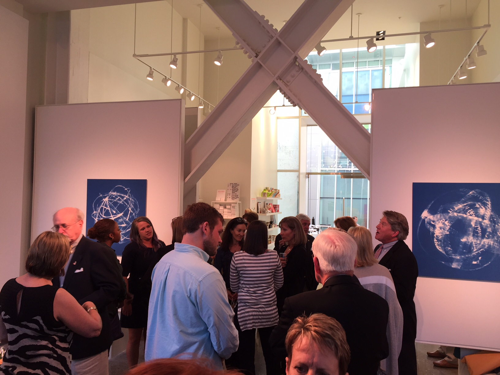

April 20, 2016
The inaugural donor reception was held on Wednesday, April 20th from 5:00 - 7:00 at the Qwirk Gallery. We invited donors who contributed $250 and above in the previous year. Each donor received a 5 oz. bag of our "Recovery Roast". Thank you everybody for coming out.

March 2, 2016
JHW is one of the sponsors for COBE’s “From Research to Rehab: A Town Hall on Young People and Substances” on April 14th from 6:30-8:30 pm, and April 15th from 8:30 am-12:30 pm. The Program will kick off on Thursday night with Dr. Kevin McCauley, a leading expert on the Neuroscience of Addiction, and will continue Friday morning highlighting some of the top local researchers, practitioners, and advocates in the areas of Policy, Prevention, Early Intervention, Addiction, Treatment, and Recovery. The conference is free open to the public. Please email recovery@vcu.edu if you are interested in attending.
We are also sponsoring The Central Virginia Opioid and Heroin Prevention Task Force “Treatment vs. Incarceration Training conducted by Chief Campanello, Chief of Police of Gloucester, Mass. on April 27th. Chief Leonard Campanello has successfully implemented alternative treatment options instead of incarceration for opiate addicts. This strategy, funded with drug seizure monies, has significantly reduced opiate overdoses in his jurisdiction. Nationwide Collegiate recovery continues to grow with more than 140 schools with programs nationwide, up from 35 in 2012. JHW is proud to support this growing initiative and will sponsor the Mid-Atlantic Collegiate Recovery at NC State in October. As a founding sponsor, it has been exciting to see the conference grow from a statewide initiative to a regional conference with 5 states and 15 schools involved. Additionally, JHW continues to fill gaps in services, providing critical funding for individuals needing to get back on their feet within a supportive environment. Since last November, we’ve financially supported four people with sober living housing in their transition from rehab. JHW has also continued to support The Healing Place, a long term recovery program for men without resources for treatment, which has seen a rapid rise in young struggling with opiate addiction. On behalf of our Board of Directors, we would like to thank you for supporting our growing Foundation. With your help, we can continue to make smart investments in organizations that promote opportunities for lasting recovery in young adults and their families.
March 1, 2016
Building Momentum!
The JHW Foundation is continuing to build momentum in the community. The Fourth Annual Oyster Roast was our largest event with more 300 people in attendance. Through your generous support we have been able to contribute more than $XXX to promote young adult recovery.
VCU Rams in Recovery is in its third year,
continues to grow and now has a dedicated
space. Tom Bannard was hired by VCU in
October as The Administrative Director for COBE
(College Behavioral and Emotional Health
Institute) and is in charge of the Rams in
Recovery Program. On Saturday, February 27th,
we took students to Lamplighter Coffee to teach
them about coffee brewing and roasting and
developed our own “Recovery Roast”. The coffee
will be used at Rams in Recovery and COBE
events, donor gifts and in a project to encourage
recovery conversation over a cup of coffee. JHW
Board members continue to serve the Rams in
Recovery project team and the foundation
remains the largest supporter of the program.
December 17, 2015
JHW goes to the Grand Canyon!

November 7, 2015
Haley Buick GMC shines a community spotlight on the JHW Foundation an organization that helps people with alcohol and drug addiction in young adults.
Watch video here.